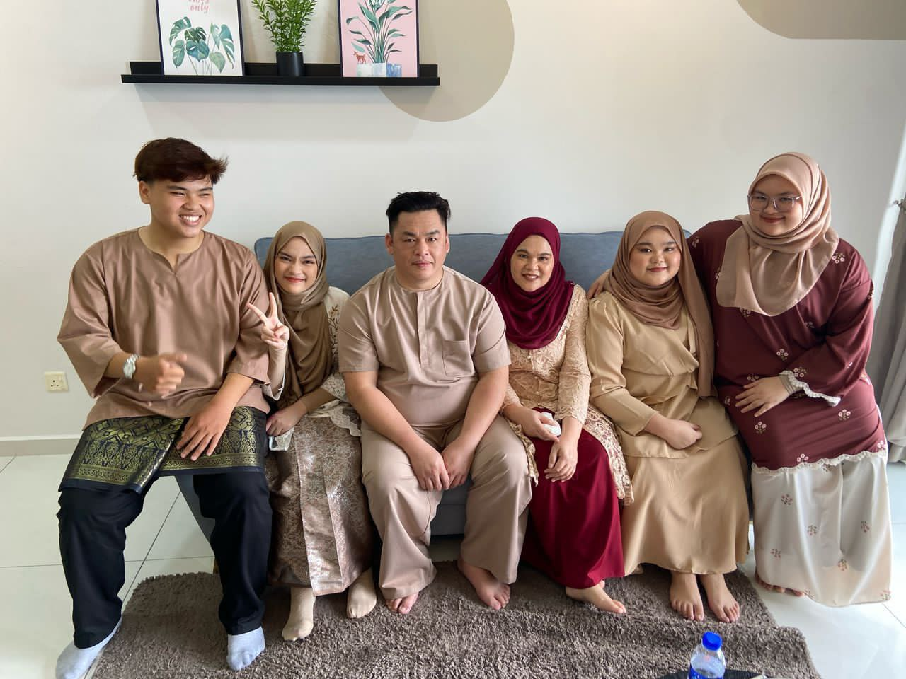

Family Memories
Family Members
Family is my main support system. Here is the lineup of family members who shape my life.
Osman bin Kolod (Father)
Date of Birth: 6th April
Passed away: 2014
My late father, Osman bin Kolod, was a kind and caring man who always encouraged me to do my best. He was the foundation of our family and inspired me to value honesty, hard work, and love. Even though he passed away in 2014, his teachings and memories continue to guide me every day.
Patrick bin Dingol (Step-Father)
Date of Birth: 13th May
My step-father, Patrick bin Dingol, has been a supportive and understanding figure in my life. He has always offered guidance and care, helping me grow and adapt while providing a loving family environment.
Julinah Misud (Mother)
Date of Birth: 26th July 1978
My mother, Julinah Misud, born on 26th July 1978, is a devoted and patient parent. She balances love and discipline, making sure all her children feel valued and supported. Her wisdom and guidance have been a constant source of strength.
Mohd Ainal bin Osman (Elder Brother)
Date of Birth: 12th August 1998
My elder brother, Mohd Ainal bin Osman, born on 12th August 1998, has always been a role model for me. He encourages me to work hard and stay focused on my goals, offering advice and guidance whenever I need it.
Siti Rabiah binti Osman (Elder Sister)
Date of Birth: 9th October 2000
My elder sister, Siti Rabiah binti Osman, born on 9th October 2000, is caring and thoughtful. She always supports me in my studies and daily life, teaching me important life lessons and helping me build confidence.
Balqis Insyirah binti Osman (Me)
Date of Birth: 8th July 2005
Me
Imad Aiman bin Osman (Younger Brother)
Date of Birth: 26th December 2007
My younger brother, Imad Aiman bin Osman, born on 26th December 2007, is cheerful and energetic. He brings joy to the family and reminds me to have fun while learning and growing together.
Nur Dzakiyyah binti Osman (Younger Sister)
Date of Birth: 10th August 2010
My younger sister, Nur Dzakiyyah binti Osman, born on 10th August 2010, is sweet and caring. She is full of curiosity and always brings laughter into our home, making our family moments even more special.